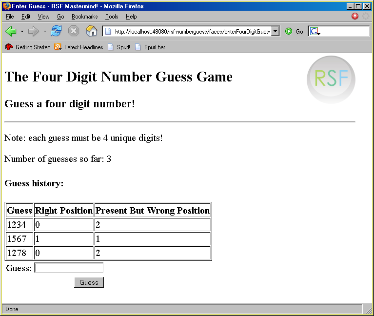

Replicators and dynamic components#
Using RSF at this level already brings many benefits - insulation from HTML, HTTP and browser nastiness, flexible Spring-configured architecture and nicely packaged flows. However, we haven't yet touched on an ability that most apps are likely to require sooner rather than later, and was the initial driving force behind RSF - the ability to present a view with a dynamic structure, driven by data from the model. The most straightforward example of this is a simple table, and there is one in the number guessing app - this pictures shows the state of play after a few rounds of the "4 digit number guess" sub-app:
|  |
At first sight it looks like we need some kind of "logic" to run as we generate this HTML view - to iterate over each member of the guessHistory and generate an HTML <tr> block for each one. RSF is unique[1] in that there is no logic which couples the model structure and the HTML template - the view structure is completely determined by the component tree, and once it has been generated, all user logic and model access is finished. The component tree and HTML template are then fused together by RSF's unique IKAT algorithm, to generate the final view.
To see how this works, take a look at the part of the view template that deals with the table you can see in the picture above - this is taken from the file enterFourDigitGuess.xhtml:
<div rsf:id="guesshistory:">
<h4>Guess history:</h4>
<table border="1">
<th>Guess</th>
<th>Right Position</th>
<th>Present But Wrong Position</th>
<tr rsf:id="guessline:">
<td rsf:id="guess">1738</td>
<td rsf:id="rightPosition">2</td>
<td rsf:id="correctButWrongPosition">1</td>
</tr>
</table>
</div>
<div rsf:id="guesshistory:">
</div>
As usual, this is pure HTML apart from the rsf:id attribute. RSF templates work by example, the most powerful means of explanation! We provide the HTML for the table as it might appear, with one complete row filled in as an example. We could have provided any number of rows, for previewing purposes, but at render-time, IKAT will replace them with the number of rows actually required. Note that the rsf:id for the table row, guessline: is slightly different from IDs we've seen before,
since it ends in a colon. This signals to IKAT that component (which must peer with a special RSF component, a UIBranchContainer) will render using component-driven logic rather than the template-driven logic that is normally used. Branches can "induce" much more sophisticated view logic than simple iteration, including recursion and selection. We can see an example of selection in this example too - note that the entire guesshistory: table is followed by another example of the table, implemented as an empty div. This performs the selection logic we need to supress the whole table, including column headers, on the user's first go when there have been no guesses. A guesshistory: tag with no guesslines in it is a better match for a component tree with no guessline components, so this empty div is transparently selected when the history is empty. In case you are concerned at the potential "bloating out" of RSF template files as they need to render every possible state of a complex user interface, don't worry - RSF features multi-file templates which allow you to break out the implementation of bulky or frequently used HTML fragments into separate files.
So, given the template above, our mission is to generate a component tree with the right structure - a UIBranchContainer with ID guesshistory: with one UIBranchComponent child with id guessline: for each history line. We could either do this in code, with a simple Java for loop written inside a ComponentProducer, or we can use a special facility provided by RSF's XML component files, a UIReplicator component. This allows the simplest forms of iteration and selection logic to be used inside ViewProducers and still stay within the XML component producer model, an ability we will use to good effect in the next example, the Hibernate Cookbook.
A UIReplicator is a "placeholder" component that takes two "arguments" - an RSF EL which can be used to locate an list of Java Objects in the request scope, and an RSF UIComponent to be replicated. The replicator used to generate the component tree for this view is as follows:
<component type="branchcontainer" id="guesshistory:">
<component type="replicator" id="guesshistoryrep">
<valuebinding>#{fourDigitNumberGuess.guessHistory}</valuebinding>
<idstrategy type="directindex"/>
<component type="branchcontainer" id="guessline:">
<component type="output" id="guess">
<valuebinding>#{*.guess}</valuebinding>
</component>
<component type="output" id="rightPosition">
<valuebinding>#{*.rightPosition}</valuebinding>
</component>
<component type="output" id="correctButWrongPosition">
<valuebinding>#{*.correctButWrongPosition}</valuebinding>
</component>
</component> <!-- end branchline defn -->
</component><!-- end replicator defn -->
</component> <!-- end branch defn -->
The ID used for the replicator component is irrelevant, since it will be destroyed before it reaches the renderer. The value binding entry <valuebinding>#{fourDigitNumberGuess.guessHistory}</valuebinding> identifies where the list driving this iteration is to be found in the request-scope container. The request-scope bean fourDigitNumberGuess is defined in the requestScopeApplicationContext.xml file to be of class FourDigitNumberGuessData, taken direct from the original Spring Web Flow example. The idstrategy entry specifies that this list is to be indexed directly "in place" by its numeric index - this option should only be used for very simple models, as it is unsafe in any kind of concurrent environment. Finally we have the definition of the component to be replicated, the branch container guessline: that peers with the <tr> tag in the template above. This looks perfectly normal except for the wildcard characters in the value bindings for its components - these will be rewritten during the fixup stage to refer to the correct EL paths, based on the idstrategy we have chosen. In this case, a typical path might look like {#fourDigitNumberGuess.guessHistory.3.rightPosition} after rewriting.
Conclusions#
Compared with the table rendering models of other frameworks, this is thoroughly clean and simple - contrast this with JSF's baffling combination of "facets" and "columns", or opaque "taglib"-based solutions. Changing from using <tr> and <td> to using a CSS layout model based on <div>s is just a matter of editing an HTML template file, yet we still have all the benefits of a completely clean model-driven architecture[2].With this standard app implemented in so many frameworks, it is a useful point of comparison. One area in which RSF comes off extremely well is in terms of lines of framework-coupled code. In fact, we have managed to develop this complete app without one single line of Java code tied to the RSF framework - it is therefore portable to all other zero-impact web frameworks out there (currently none :P but I strongly hope RSF will start a trend in this respect). Here is a table summarising the LOC situation in various frameworks:
| SpringWebFlow | RIFE | Struts | RSF | |
| Total LOC | 295 | 454 | ** | 307 |
| Coupled LOC | 172 | 192 | ** | 0 |
(I placed a ** under the Struts column since the version I found had all of its code embedded in JSPs - clearly however many "lines of code" were there, none of them were extractable)
Java producers#
Note however that for general-purpose, and especially for large-scale development you would NOT use the XML-driven style that we use here for specificing view producers. The all-Java approach that you see for example in the ComponentTest demo and the last page of the Hibernate Cookbook sample are more typical examples of RSF development. Naturally of course the use of Java producers does introduce a framework dependence into the application.Head - Number Guessing
Page 1 - Simple XML components and flow definitions
Page 2 - Request scope bindings and error handling
Page 3 - Dynamic views and replicators
[#2] A criticism that could be levelled at this scheme is that it is slightly verbose - certainly more so than a JSP, since the key identifier, the RSF ID, must be mentioned in two separate places. The first response to this is to reiterate that RSF is very much aimed at mature and long-lived applications, where the initial cost of design is expected to be small compared to the maintenance burden of reskinning, redesigning and reevaluating over multiple product cycles. However, as a concession to a more rapid "prototyping" style of design, it is possible that RSF support a form of "interwoven" HTML-and-component definition for those developers who might appreciate it. Once the view was developed, a simple automated tool could "strip" the component definitions out of the HTML into a separate file, leaving the more maintainable model that we adopt in this app. The interwoven file, much more similar in style to JSP or Tapestery templates, would look as follows
 . Note that i) this is "just as valid" as an HTML template in current browsers/design tools, although writing a valid DTD for this format would now be near-impossible, ii) some extra <div> tags were necessary to house components that have no "natural home" in the HTML structure. As the template structure becomes more complicated, the template and component structure will diverge increasingly, and this "interwoven" pattern cannot be recommended for general development.
. Note that i) this is "just as valid" as an HTML template in current browsers/design tools, although writing a valid DTD for this format would now be near-impossible, ii) some extra <div> tags were necessary to house components that have no "natural home" in the HTML structure. As the template structure becomes more complicated, the template and component structure will diverge increasingly, and this "interwoven" pattern cannot be recommended for general development.
Add new attachment
Documentation
Developers
Javadocs
Designers
Sample RSF Apps
Presentations
Acronyms
Downloads
Current Release
Trunk
Distributions
Old Versions
Community
Q&A
Forums
Mailing Lists
Issue Tracker
People
Design
Roadmap
Integrations
Concepts
Philosophy